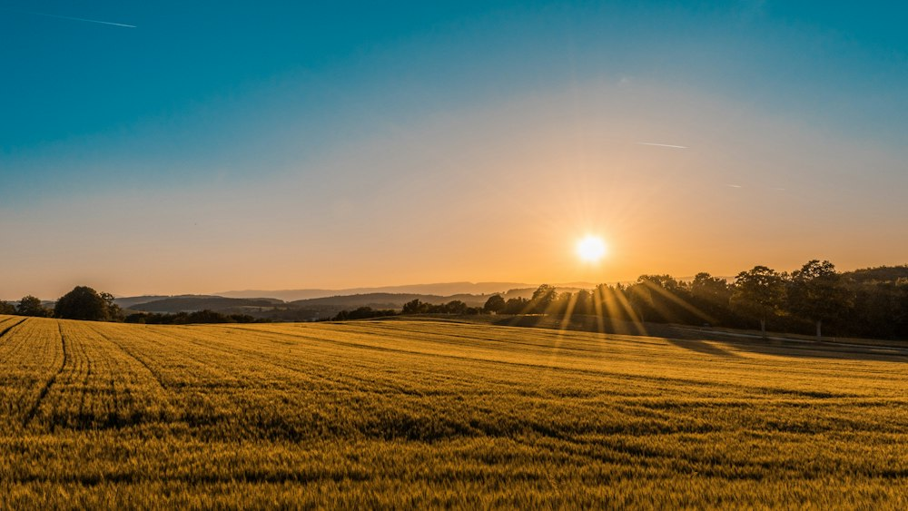

Research areas / Food systems & tradeConnected markets.
Connected markets.
Food within reach.
The economics of agricultural prices, market integration, and the routes that bring food from producers to consumers.
OUR RESEARCH
THE AREA
Questions that connect
markets and people.
GLOBAL DEVELOPMENTS
A world in motion.
Recent news and reports from around the world, with connections to our research agenda.
Sources reviewed:
OUR RESEARCH
From questions
to evidence.
APPLIED PROJECTS
Data in practice.
Browse projects ↗NEXO / Food systems & trade
A shared question
starts a conversation.
Research collaborations, seminar invitations, and conversations across disciplines.